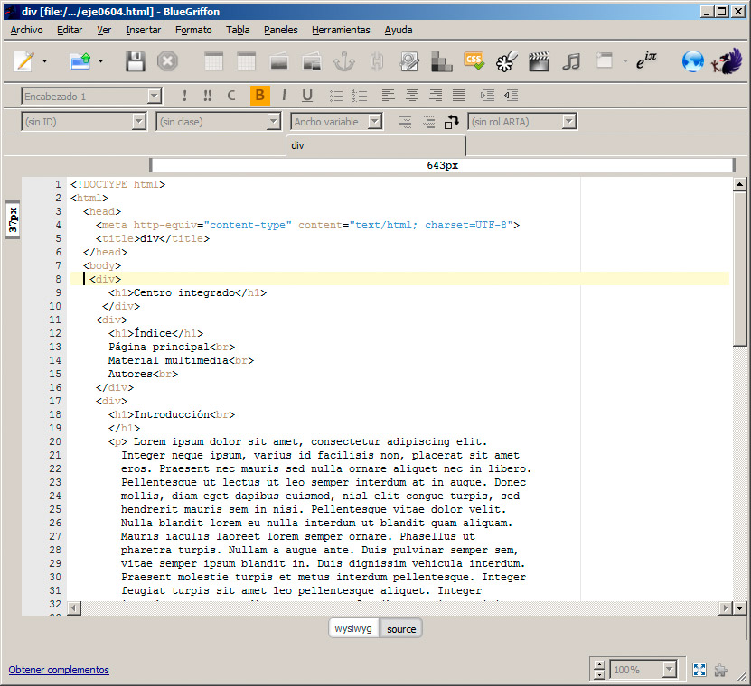
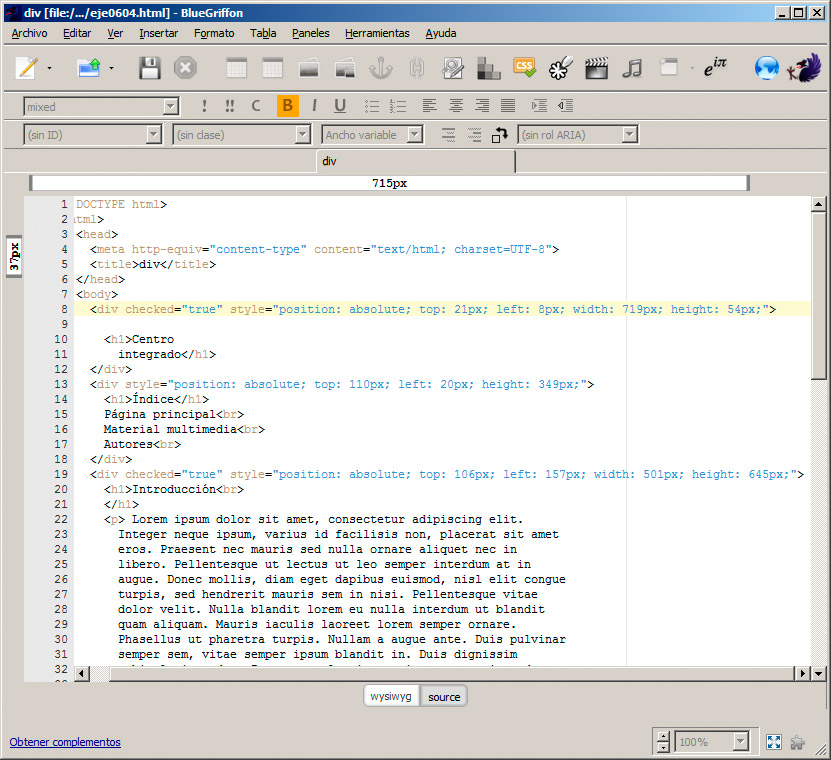

La ventaja del uso de bloques definidos con <div>, además de aplicar formato es que podemos posicionarlos en el lugar que más nos convenga, gracias a algunas de las propiedades de las hojas de estilo.
Este proceso se vuelve muy sencillo si nos apoyamos en las opciones del panel Propiedades de estilo del editor BlueGriffon. En concreto nos interesan las opciones de Posición y distribución, recogidas en la figura. El panel en cuestión se despliega mediante la opción Paneles>Propiedades de estilo o mediante el icono correspondiente en la barra de iconos.
Ubicación de un bloque
Utilizando los valores de Flotación podemos ubicar el bloque a la izquierda, a la derecha e incluso centrarlo en determinados momentos.
Traducido a estilos, este cambio es tan sencillo como indicar lo siguiente:
<div syle="float: right;">
Posicionamiento absoluto
Probemos ahora a modificar la posición de varios bloques. En la figura se muestra una página con tres contenidos diferentes: un título, un índice y un bloque de texto largo. Mientras no se apliquen estilos, los contenidos se mostrarán uno sobre otro.

La parte que nos interesa del código fuente ha quedado así:
<body>
<div checked="true" style="position: absolute; top: 21px; left: 8px; width: 719px; height: 54px;">
<h1>Centro integrado</h1>
</div>
<div style="position: absolute; top: 110px; left: 20px; height: 349px; width: 145px;">
<h1>Índice</h1>
Página principal<br />
Material multimedia<br />
Autores<br />
</div>
<div checked="true" style="position: absolute; top: 106px; left: 213px; width: 445px; height: 645px;">
<h1>Introducción<br /> .....
A continuación, mediante BlueGriffon, iremos seleccionando cada uno de los bloques y seleccionando la opción Absoluta, en la opción de Posición.
Antes de poder aplicar los cambios, debemos asegurarnos de que estamos afectando al elemento adecuado; por ello en el cuadro Aplicar estilos a del panel, seleccionaremos este elemento, mediante los estilos internos.
Hay que recordar que para seleccionar un <div> concreto podemos utilizar el selector de etiquetas situado en la zona inferior del editor.
Al hacer esto, aparecerán unos controles alrededor del <div> que podremos modificar para ajustar su ancho y alto, además de su posición, como se muestra en la figura.
Podemos repetir el mismo proceso hasta ubicarlos a nuestro gusto.
Observando de nuevo el código fuente, veremos que se han incorporado algunos estilos con sus respectivos valores:
- position: absolute: indica que vamos a establecer una posición fija para ese <div> en la página. El resto de los valores situarán el elemento de diferente forma.
- left (izquierdo), right (derecho), bottom (inferior) y top (superior): estos valores, seguidos de un número de píxeles, porcentaje u otros valores, establecen la distancia que habrá entre el div y el borde respectivo.
- width (ancho) y height (alto): indican la altura o anchura que tendrá el cuadro.

No entraremos en mayores complicaciones por el momento; sólo un par de muestras de la potencia de este modelo. Imaginemos que queremos que sólo se desplace el bloque central de texto y que el título y el índice permanezcan fijos. Bastaría con cambiar esos dos <div> de posición absoluta a fija y el resultado sería el de la figura.
Por último, no es necesario establecer siempre valores fijos. En lugar de píxeles podemos emplear porcentajes. Así podríamos crear un cuadro de texto que se sitúa siempre en el centro de la pantalla, independientemente de las dimensiones de la ventana del navegador.

Con esta configuración de div se consigue el efecto deseado.
<div style="text-align: center; position: absolute; top: 30%; left: 30%; right: 30%; bottom: 30%;">
Para realizarlo mediante BlueGriffon hemos seleccionado primero el valor Absoluta en la opción Posición y a continuación hemos indicado 30% en cada cuadro de Desplazamientos.
En realidad conseguir un centrado perfecto es algo más complejo, pero con estos valores se consigue un efecto aproximado para una imagen de las dimensiones de la figura.
Si probamos a modificar el tamaño de la ventana, veremos cómo el contenido se desplaza para mantener su posición; esto se debe al uso de porcentajes en lugar de píxeles.
Podemos observar también que un <div> no sólo contiene texto, sino que puede contener a cualquier otro elemento HTML: imágenes, párrafos, iframes, vídeos, cualquier cosa. Incluso pueden contener otros <div>. De hecho anidar unos <div> dentro de otros es una práctica más que habitual para estructurar correctamente una página web.
Pregunta de Elección Múltiple
|
No sólo contiene texto, sino que puede contener cualquier otro elemento HTML: imágenes, párrafos, iframes, vídeos, etc.
| |
|
Podemos anidar unos <div> dentro de otros; es una práctica más que habitual para estructurar correctamente una página web.
| |
|
Podemos posicionarlos en el lugar que más nos convenga, gracias a algunas de las propiedades de las hojas de estilo.
| |
|
Todas las anteriores son correctas.
|